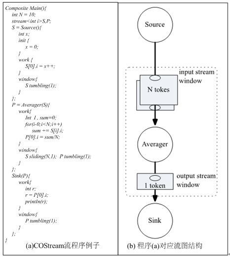

程序例子
每一个独立运行的COStream程序都由一个称为Main的composite开始，Main作为整个程序的入口。花括号之间定义了三个计算节点称为operator，分别为Source，Averager和Sink。其功能如下：Source作为数据源产生由“0”开始的自然数序列输出给Averager；Averager将得到的前N个自然数求平均值并消耗掉最早得到的一个数据，把计算得到的平均值输出给Sink；Sink将得到的平均值打印输出到屏幕。
各个operator之间通过流变量S和P相互连接，每个operator内部包含了对数据流的处理过程。Operator对每个数据流变量都定义了相应的window，采用窗口机制（window）对每个数据流进行访问，window内存放了operator每次进行运算所需数据。每次operator都从输入流的window中读入数据，同时将结果填入到输出流window中。图1中operator Averager在输入流S和输出流P上分别定义了2个window：滑动窗口（sliding）和翻转窗口（tumbling），sliding窗口的大小为N个数据（token）长度，每次计算完成后滑动一个1个数据长度；tumbling窗口的长度为1个数据长度，每次计算完成后窗口的数据全部输出到数据流中。窗口中的数据采用类似数组下标的方式来访问。
每个operator采用数据驱动的方式执行，即输入数据填满窗口即触发operator的执行，只要有无穷的数据，程序将会无穷执行。每个operator内含有在该operator内可见的变量声明列表、init函数库和work函数块3部分：变量声明列表定义了init和work中使用到的变量，init部分的语句只在operator的第一次运行时执行，之后不断地执行work部分的代码。

图1： COStream数据流程序实例和对应数据流图